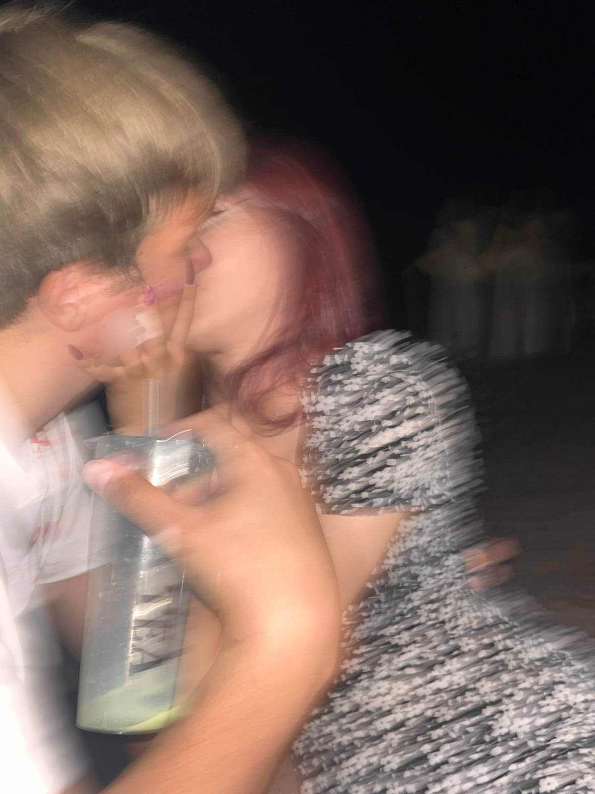
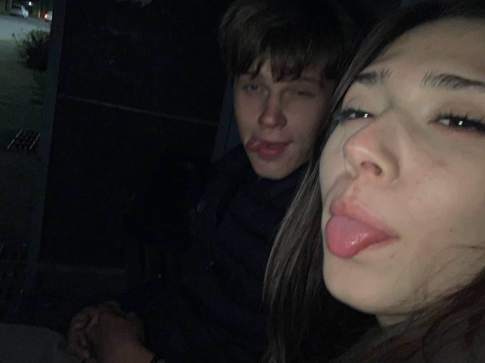
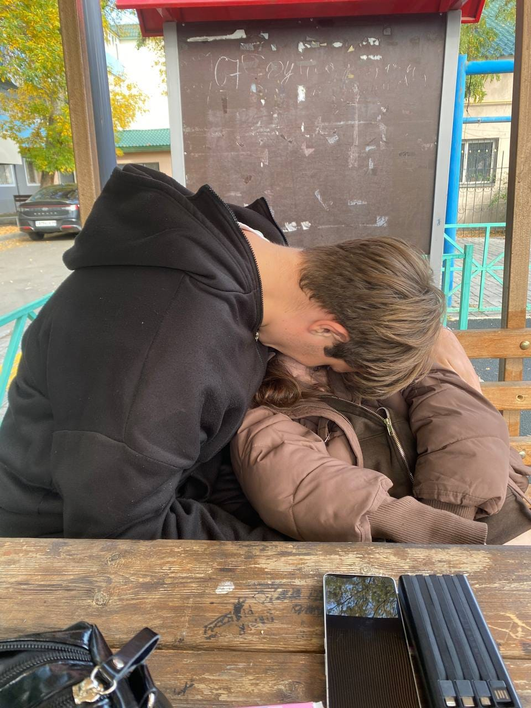
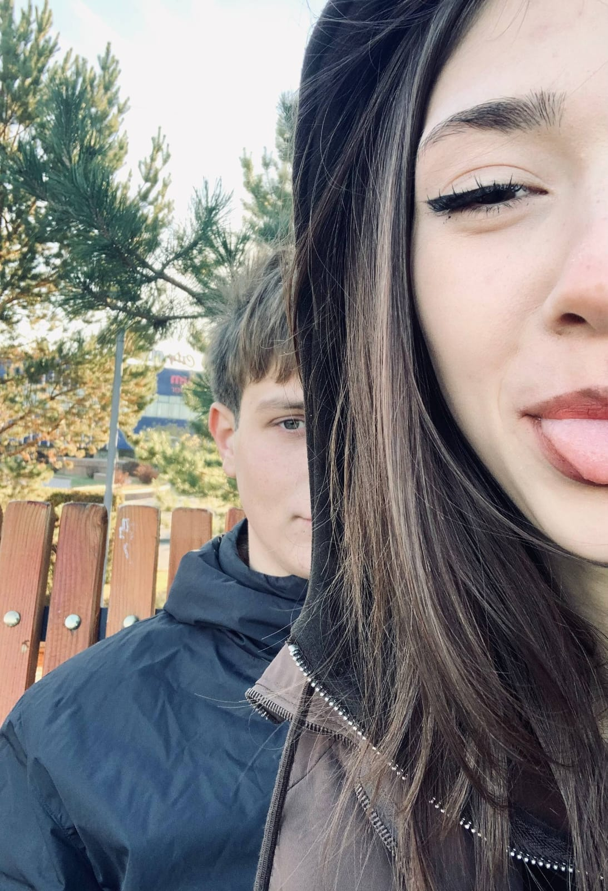

Самому дорогому человеку
Спасибо,
родная ❤️
Я создал этот маленький мир только для тебя. Здесь собраны мои чувства, наши воспоминания и слова, которые я хочу тебе сказать.
Открыть моё сердце ↓Нажми на кнопку, чтобы включить песню 🎵
От всего сердца
Мои слова для тебя
Для моей Никуши ❤️
Я даже не знаю, как правильно начать, потому что мне хочется сказать тебе очень многое. Иногда я думаю о том, сколько всего ты для меня значишь, и понимаю, что мне не всегда хватает слов, чтобы это объяснить. Я могу не каждый день говорить тебе о своих чувствах длинными сообщениями, могу иногда не знать, как правильно выразить свои мысли, но я правда очень сильно тебя люблю.
Я очень рад, что мы с тобой познакомились. Честно, я даже не представляю, как бы всё было, если бы тебя не было в моей жизни. Ты стала для меня человеком, с которым хочется делиться всем: рассказывать, как прошёл день, обсуждать всякие глупости, смеяться над ерундой и просто общаться даже тогда, когда вроде бы нечего рассказать.
Мне нравится, когда ты пишешь мне, когда рассказываешь что-то про себя, когда делишься своими мыслями. Даже обычное сообщение от тебя может поднять мне настроение. Иногда я могу просто сидеть и улыбаться, читая то, что ты написала. Наверное, со стороны это выглядит смешно, но мне всё равно, потому что это ты.
Спасибо тебе за то, что ты есть в моей жизни. За твоё внимание, заботу, за наши разговоры и за все моменты, которые у нас уже были. Возможно, какие-то вещи кажутся тебе совсем незначительными, но для меня они многое значат. Мне приятно вспоминать наши разговоры, пересматривать фотографии и думать о том, сколько всего хорошего у нас ещё впереди.
Мне хочется, чтобы ты всегда могла спокойно рассказать мне о том, что у тебя на душе. Не только когда ты счастлива и у тебя всё хорошо, но и когда тебе грустно, когда что-то бесит или когда просто хочется пожаловаться на весь мир. Тебе не нужно делать вид, что всё нормально, если это не так. Я хочу слушать тебя, поддерживать и быть рядом, когда тебе это нужно.
Я знаю, что не всегда всё делаю правильно. Иногда могу сказать что-то не то, где-то не понять тебя или поступить так, как тебе неприятно. Я не идеальный, и у меня тоже бывают ошибки. Но я не хочу, чтобы из-за этого ты сомневалась в том, насколько ты мне важна. Мне хочется учиться лучше понимать тебя, прислушиваться к тебе и делать так, чтобы нам обоим было хорошо в наших отношениях.
Мне очень хочется, чтобы у нас было побольше совместных воспоминаний. Чтобы мы чаще фотографировались, куда-то ходили, пробовали что-то новое, дурачились вместе и просто проводили время так, как нравится нам. Хочется, чтобы спустя время мы могли пересматривать наши фотографии, смеяться над старыми моментами и говорить: «А помнишь, как это было?» Для меня такие вещи намного ценнее каких-то дорогих подарков.
И знаешь, мне хочется не только красивых моментов. Мне хочется обычной жизни с тобой тоже. Переписываться перед сном, спрашивать, как прошёл твой день, рассказывать друг другу всякие мелочи, поддерживать друг друга и радоваться даже небольшим успехам. Чтобы мы могли быть рядом не только тогда, когда всё идеально, но и тогда, когда у кого-то из нас плохое настроение или просто тяжёлый день.
Я хочу, чтобы ты знала одну вещь: тебе не нужно быть идеальной, чтобы я тебя любил. Ты можешь уставать, злиться, грустить, вредничать и иногда вообще не хотеть ни с кем разговаривать. Я не жду, что ты всегда будешь улыбаться или что у тебя постоянно будет хорошее настроение. Ты мне дорога не только в самые красивые и счастливые моменты. Мне важна ты сама, со своим характером, привычками, эмоциями и всеми теми мелочами, которые делают тебя именно тобой.
Мне нравится твоя улыбка, нравится, когда ты смеёшься, нравится, когда мы можем говорить о чём угодно и не замечать, как проходит время. И даже если я не всегда говорю об этом вслух, я замечаю такие моменты и ценю их. Мне хочется, чтобы ты чаще улыбалась и чтобы у тебя было побольше дней, когда ты чувствуешь себя счастливой.
Я хочу радовать тебя не только по каким-то особенным датам. Хочу иногда делать что-то приятное просто потому, что мне захотелось увидеть твою улыбку. Хочу, чтобы ты чувствовала мою заботу не только по сообщениям, но и по поступкам. Мне хочется, чтобы ты никогда не думала, будто должна выпрашивать моё внимание или постоянно напоминать мне о том, что тебе нужна любовь. Я хочу сам проявлять её, потому что ты для меня действительно важна.
Я не знаю, каким будет каждый наш день дальше, и не могу предсказать всё, что нас ждёт. Но мне хочется, чтобы мы продолжали узнавать друг друга, становились ближе и создавали свою историю. Чтобы у нас было много поводов для улыбок, много фотографий, много тёплых разговоров и воспоминаний, которые будут принадлежать только нам.
Любимая, я очень ценю то, что у меня есть ты. И мне не хочется, чтобы этот текст был просто набором красивых слов, которые ты прочитаешь один раз и забудешь. Мне хочется, чтобы ты чувствовала мои слова в том, как я отношусь к тебе, как разговариваю с тобой, как забочусь о тебе и как стараюсь делать наши отношения лучше.
Спасибо тебе за всё, что между нами есть. За наши разговоры, за смех, за нежность, за моменты, когда ты делаешь меня счастливее, даже сама этого не замечая. Спасибо за то, что могу называть тебя своей девушкой и говорить, что люблю тебя.
Я очень сильно тебя люблю. ❤️
Мне хочется, чтобы ты была счастлива, чтобы у тебя всё получалось и чтобы ты никогда не забывала, насколько ты замечательная. Я хочу поддерживать тебя в твоих мечтах, радоваться твоим успехам и помогать тебе в те моменты, когда что-то не получается. И мне хочется, чтобы ты тоже чувствовала себя любимой рядом со мной.
Я не обещаю, что всегда буду всё делать идеально. Но я хочу стараться, слышать тебя, ценить тебя и не забывать о том, что отношения — это мы оба. Мне хочется, чтобы у нас получалось разговаривать даже о сложных вещах, понимать друг друга и не забывать, почему мы вообще выбрали быть вместе.
И если однажды ты снова откроешь эту страницу и перечитаешь всё это, я хочу, чтобы ты улыбнулась. Чтобы вспомнила, как сильно я тебя люблю и сколько всего хорошего я хочу пережить вместе с тобой.
Ты моя любимая девочка. Я очень рад, что ты у меня есть. И я хочу, чтобы впереди у нас было ещё очень много счастливых моментов вместе. ❤️
Наша история
Моменты, которые дороги мне
Каждая фотография — это маленькая частичка нашего счастья.




Наши моменты в движении
Наши видео
Из всех случайностей
моей жизни
самая прекрасная — ты.
Спасибо, что ты рядом. Навсегда твой ❤️